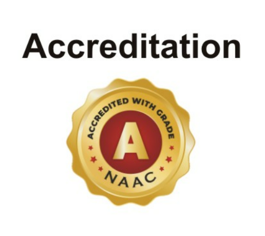
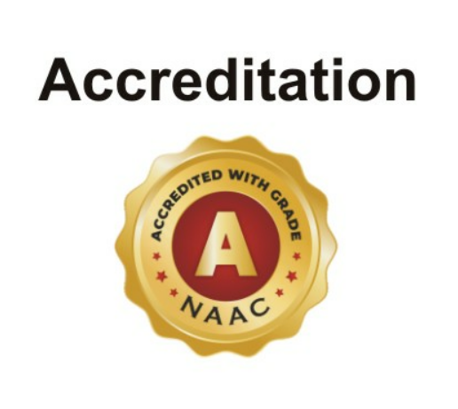

 Our College was established in the year 1998. It is promoted and supported by Virudhunagar Hindu Nadars' Devasthanam, various Hindu Nadars' Mahamai Tharappus in Virudhunagar and other places and educational institutions of Virudhunagar. The management of the institution consists of the elected members of various Mahamai Tharappus and ex-officio members of various educational institutions of Virudhunagar. The office bearers, the president, the vice-president, the secretary, the joint secretary and the treasurer - are elected by the managing board members.
Our College was established in the year 1998. It is promoted and supported by Virudhunagar Hindu Nadars' Devasthanam, various Hindu Nadars' Mahamai Tharappus in Virudhunagar and other places and educational institutions of Virudhunagar. The management of the institution consists of the elected members of various Mahamai Tharappus and ex-officio members of various educational institutions of Virudhunagar. The office bearers, the president, the vice-president, the secretary, the joint secretary and the treasurer - are elected by the managing board members.
Our College is ideally located on the home land of Karmaveerar "Bharat Ratna" K. Kamaraj and our institution is one of the Virudhunagar's most recognisable landmark. Our Institution is growing with sustained progress due to the generous contributions from Virudhunagar Devasthanam, Various Mahamai Tharappus and Educational Institutions. Presently, Our College spans to 47.92 acres of land